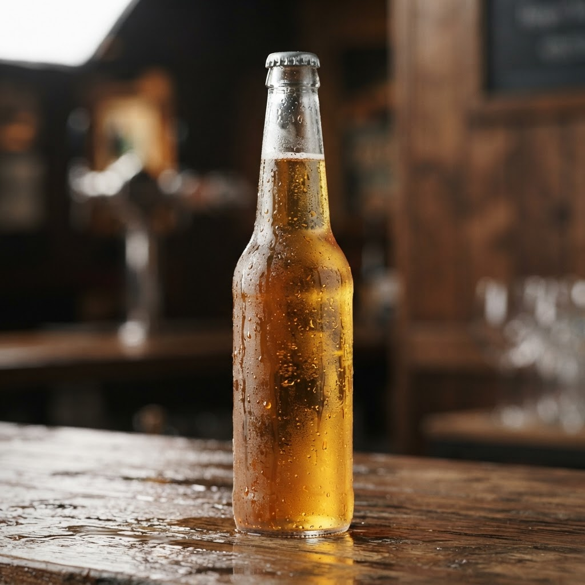
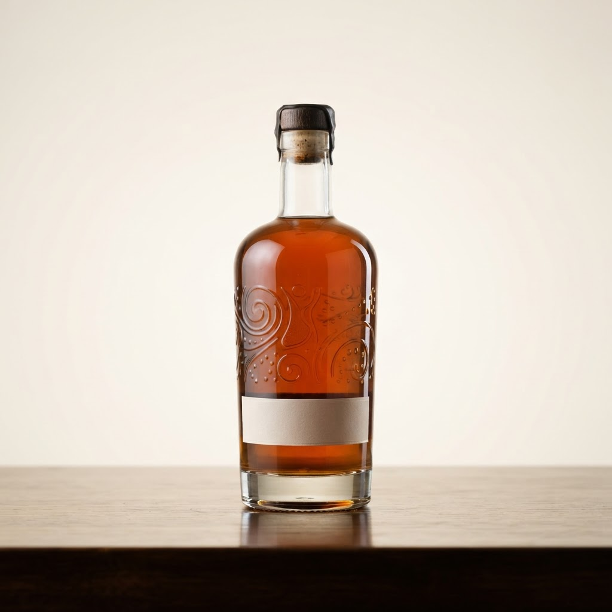
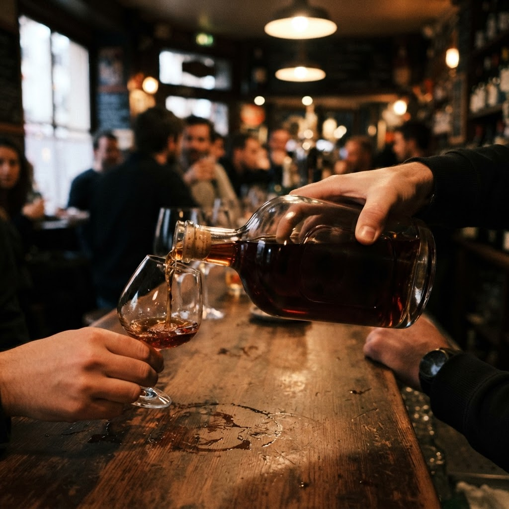

Перевозка пива с 1 сентября с доставкой в Красносельском районе

Содержание
Колтуши активно развиваются, но доступность ночных услуг остается острым вопросом для местных жителей. Перевозка пива с 1 сентября с доставкой в Красносельском районе и прилегающих территориях стала маркером качества сервиса, где скорость и пунктуальность выходят на первый план.
Почему важна профессиональная перевозка пива с 1 сентября с доставкой в Красносельском районе
Осень диктует новые правила логистики, где ключевым фактором успеха становится работа в ночное время. В отличие от стандартных курьерских служб, ориентированных на дневной цикл, профессиональный подход к транспортировке требует понимания специфики продукта. Мы сравниваем традиционную розницу с форматом экспресс-обслуживания: если обычный магазин закрывается по графику, то специализированный сервис функционирует в режиме нон-стоп. Суть профессиональной перевозки заключается в соблюдении температурного режима и целостности упаковки при перемещении из точки А в точку Б. Для клиента это означает, что заказ будет доставлен в течение шестидесяти минут независимо от дорожной обстановки или удаленности маршрута. Обучение персонала строится на минимизации простоев: каждый курьер знает кратчайшие пути объезда пробок, что критически важно в условиях плотной застройки Колтушей. Внедрение стандартов качества позволяет исключить повреждение тары и гарантирует, что напиток попадет на стол в идеальном состоянии. Сравнение показывает, что хаотичная доставка проигрывает системному подходу: когда логистика отлажена до минут, клиент получает предсказуемый результат, а не ожидание длиною в вечер.
Алгоритм работы и стандарты обслуживания
Обслуживание строится на жестком регламенте: прием заказа, мгновенная обработка и выход курьера на маршрут. Мы сравниваем старые методы, где ответственность была размыта, с современной моделью контроля на каждом этапе. В новой схеме каждый этап фиксируется в системе, что позволяет оперативно реагировать на любые изменения в трафике. Сотрудник обязан не только доставить заказ за час, но и вежливо предоставить отчет о выполнении задачи. Важным элементом обучения является коммуникация: умение четко отвечать на вопросы заказчика и сохранять спокойствие в нестандартных ситуациях. В сравнении с дилетантским подходом, где курьер может потеряться или задержаться, наши стандарты исключают человеческий фактор за счет использования навигационных систем и четких инструкций. Фокус внимания смещен на потребности клиента, который ценит свое время и ожидает премиального отношения к доставке. Мы учим персонал видеть в каждом заказе не просто посылку, а ценность, которую необходимо сберечь. В результате процесс превращается в отлаженный механизм, где человеческое мастерство соединяется с технологичностью.
Как быстро приедет курьер, если я сделаю заказ ночью?
Мы гарантируем доставку в течение одного часа с момента подтверждения заявки. Наши сотрудники работают по заранее выверенным маршрутам, что позволяет оперативно преодолевать любые расстояния даже в ночное время.
Итог
Итог всегда один: назвать следующий шаг покупателю — оформить заказ и получить его в течение часа в своём районе.
Заказать доставку
Оформите заказ сейчас: привезём за 40-60 минут в любой район Петербурга, круглосуточно.
ПризывНаши статьи

Доставка алкоголя спб с доставкой в Приморском районеЖители Колтушей часто сталкиваются с логистическими сложностями при заказе товаров после полуночи. Однако круглосуточная доставка алкоголя СПб с доставкой в …
Коньяк доставкой спб с доставкой в Красносельском районеКолтуши стремительно растут, превращаясь из пригорода в полноценную часть агломерации. В ночное время поиск качественного алкоголя становится задачей со звез…